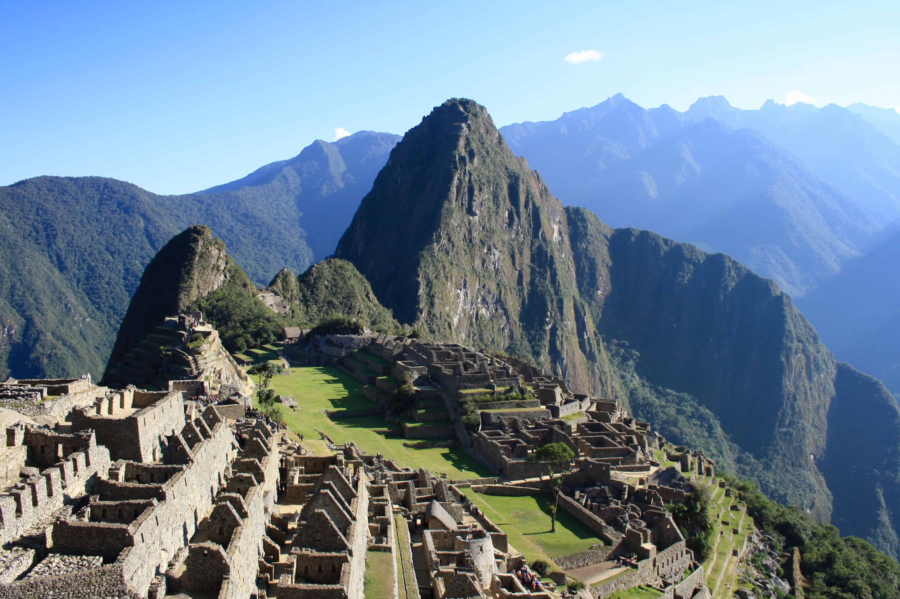
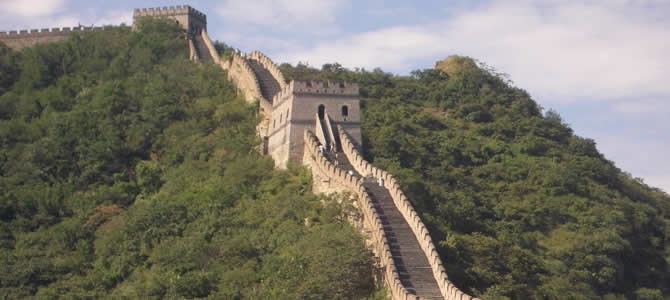
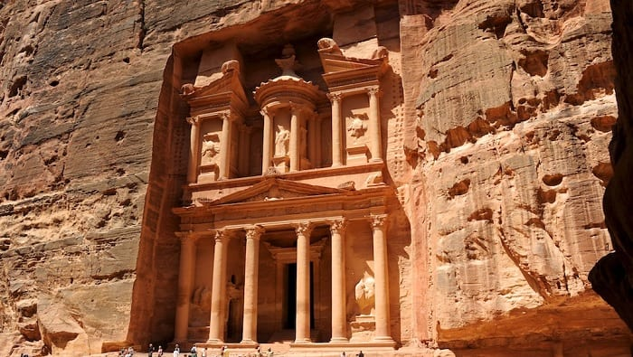

Yucatan, Mexico
Chichen Itza
Chichen Itza, the ancient Mayan citadel, is without doubt the most
amazing religions monument in Mexican history.
| Home | Sites to visit in India | Tourism in India | Types of Tourism in India | New Seven Wonders Of The World | UNESCO |
The New 7 Wonders Foundation is a private organization established in 2001, which is dedicated to investing in good causes related with the monument preservation and reconstruction around the world.
This organisation prepared a global contest on the internet, whose goal was to find the Seven Wonders of the Modern World. This election was made through a global vote on its website.
Finally, on July 07, 2007 the results were announced and these are the proclaimed New Seven Wonders of the World.
| Yucatan, Mexico Chichen ItzaChichen Itza, the ancient Mayan citadel, is without doubt the most |
|  | Cusco, Peru Machu PicchuThe most beautiful Inca city and the main archaeological site of |
 | Rio de Janeiro, Brazil Christ the RedeemerOn top of Corcovado Mountain overlooking Rio, this 38m high statue waits for visitors from the whole world with open arms. Learn More |
|  | Beijing, China Great Wall of ChinaOne of the most famous landmarks in the world and the only man made structure that can be seen from space. Learn More |
|  | Aqaba, Jordan PetraNear Aqaba, Jordan you can follow in the footsteps of Indiana Jones, to discover these awe inspiring giant red mountains and extensive mausoleums. Learn More |
 | Rome, Italy Roman ColosseumAn elliptical amphitheatre, the Coliseum is one of the greatest works of Roman architecture and engineering. Learn More |
 | Agra, India Taj MahalPerhaps the most famous landmark in India, the Taj Mahal is a truly magnificent monument that reflects an immense love. Learn More |